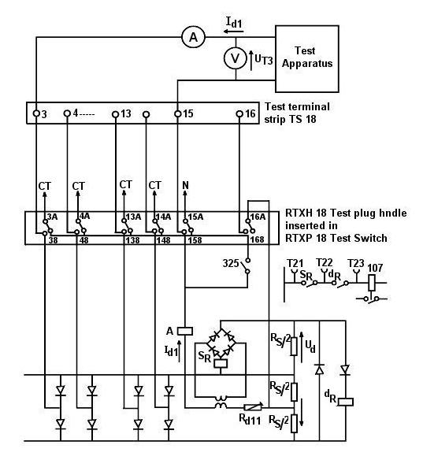

| Protection |
Earth Fault for Bus Bar Protection
RADSS
ABB
Document No: EFR-031-r0
Issued to: Networks
Using Secondary Injection Test Set
|
|
|
|||
| Equipment: Earth Fault for Bus Bar Protection RADSS ABB |
Document No: EFR-031-r0 |
|||
|
Issued to: Networks |
||||
| Status: |
||||
| Procedure: Using Secondary Injection Test Set |
Approved Date: 23 Nov 1996 | |||
| Date to be Reviewed: Nov 2001 | ||||
Introduction
The RADSS relay is a high speed, moderately high impedance differential relay for phase and earth fault protection of buses. Internal faults are detected prior to CT saturation. Stability on external faults is guaranteed even with instantaneous line CT Saturation.
The RADSS three phase differential relay is used in EEA for 220 & 66KV bus bar protections. It is manufactured by ABB and can be used with SF6 and conventional switchgear.
Safety Precautions
A work permit must be issued and the maintenance staff should carry the suitable ID safety category,
Maintenance staff should be trained well, qualified or directly supervised by some one who is.
Safety fence with caution marks surrounding the work area is required.
Personal safety and healthy equipment must be used as safety shoes, safety helmet ... etc
Outage arrangement must be done.
Inserting the test plugs shorts make sure CT secondary circuits (for RADSS relay).
RADSS relay is normally tested with both bus A and bus B in service, so care must be taken to prevent sending trip signals to the circuit breaker trip coils.
Be very careful not to open any CT circuit, as this would cause dangerous voltages.
Tools and Equipment
Secondary injection test set.
Ammeter 0-2 A AC
Voltmeter 0-300 Vac, Voltmeter 0-300 Vdc
Test leads
RTXH 18, test-plug handle with test wires (TS 18)
RTXM trip block plugs
Note: RTXH 18, RTXM and RTXB plugs are
supplied with the relay.
Work to be Carried Out
Steps to Prepare for Relay Testing
Review technical reference material: Manufacturer’s manual.
Obtain copy of relay setting from field maintenance file and compare it with the setting on the relay
Inspect the CT secondary circuits and all cabling supplying the relay.
Before inserting the test plug handle into the relay check from the station drawing that the test plug will isolate
Breaker trip coils
- Breaker failure scheme associated with this relay.
- Disturbance alarms and fault recorder associated with this relay.
If the test plug does not isolate any one of above items, you have to isolate it
Testing the Relay
Carefully follow these test procedures
Verify the test results match the relay setting, if not consult technical services.
Test trip all breakers associated with the relay.
Connect one or more circuit breakers to the bus and initiate a trip from the RADSS relay
Repeat to include all breakers
Preparation
Obtain authorization form the control center.
Look at the RADSS relay and make sure that the red “DC flag" is not present. Presence of this flag means there is no DC and the cause must be investigated.
Connect the test set and relay according to Fig. 1
NOTE: During the routine testing the two bus bars A and B must NOT be
interconnected via bus isolator switches. When both bus isolator switches
are closed, the RADSS Bus B diode circuits are connected to RADSS Bus A.
EEA requires that all loads be switched off the bus being tested
Check of the RADSS Operating Values for Alarm Relays
Differential Relays and Starting Relays
The following steps block all tripping for Bus A and Bus B, respectively.
Insert one RTXB trip block plug in contact No. 17 of the RTXP 18 test switch for phase T seat 101.137 in RADSS Bus A.
Insert one RTXB trip block plug in contact No. 17 of the
RTXP 18 test switch for phase T seat 101.137 in RADSS Bus B.
Note: The trip relays for Bus A and Bus B are now blocked.
Testing RADSS Bus A Protection
Testing Phase R
Insert the RTXH 18 test-plug handle with test wires in the RTXP 18 test switch for phase R seat 101.101 in RADSS Bus A.
If RADSS is designed for more than 12 lines, one more RTXH 18 test-plug handle without test wires must be inserted in the RTXP 18 test switch for phase R in seat 501.101 in RADSS Bus A.
The current transformers for Bus A are now short circuited and separated from RADSS Bus A
NOTE. The continuous thermal rating of the differential circuit is 0.5 A. However, a current of one Ampere is permitted for 50 seconds.
Check of Alarm Relay
Increase slowly the injection voltage until the alarm relay for phase R operates.
Check that the R-phase flag in the indicator unit seat 315 drops after a delay equal to the time setting on the RXKE 1 alarm timer in seat 307.
Check that the lamp "BLOCK" in seat 375 lights up.
Record the operating voltage UT3 and current Idl as shown in figure 1.
Push the push-button “RESET” located in seat 375
Check of Differential Relay
Connect a test lead from column T2 terminal 1 (T21) to terminal 2 (T22) on the same column in the RQDA 040 relay unit seat 115 for phase R in RADSS Bus A. (The starting relay contact for phase R in RADSS Bus A is now shorted)
Increase the injected voltage until the differential relay for phase R operates.
Check that the flag "U" in the indicator unit seat 345 drops.
Record the operating voltage U T3 and current I dl.
Check in the control room that the alarm signal for blocked RADSS has been received.
Push the push-button “RESET” located on seat 375.
Check of RADSS Bus A Stability
Reduce the injected current to 80 % of I d1.
Check of other lines on the RADDS relay:
Connect in turn terminals 3 to 14 on the test terminal
strip, respectively, terminal 15 to the test set, and check that the current
is 0.8 x I for all current circuits.
Note: Turn off the test set current before moving the test lead from
terminal to terminal to prevent arcing.
Check that the flag "U" in the indicator unit seat 345 does not drop.
If the flag "U" drops there may be a fault (diode-puncture) in one of the incoming line diode circuits. Each diode must then be checked by an ohmmeter.
If RADSS is designed for more than 12 lines, the two RTXH 18 test-plug handles shall be interchanged.
Connect in turn terminal 3 to 14 on the test terminal strip, respectively and terminal 15 to the test set.
Check that the flag "U" in the indicator unit seat 345 does not drop.
Press the push-button "RESET" in seat 375.
Check of Starting Relay
Remove the test lead from T21 and T22 test terminals, which was installed in step no. 1 of Check of Differential Relay
Increase the injected voltage until the starting relay for phase R operates and the flag drops.
Check that the flag "U" in the indicator unit seat 345 drops.
Record the operating voltage UT3 and current I dl.
Reduce the injected voltage to zero to avoid unnecessary heating of the differential resistors.
Press the push-button "RESET" in seat 375.
Check that all flags in the indicator unit reset.
Check that the lamp "BLOCK" is switched off.
Remove the RTXH 18 test-plug handle(s) from phase R.
Check that the operating voltages and currents agree with those in the setting sheets. This completes the testing of Phase R
Testing Phases S and T
Repeat the above steps from step 4 to step 10 for phases S and T.
Testing the RADDS Bus B Protection:
Repeat the steps from step 3 to step 8 for testing the RADDS Bus B Protection.
Check of Bus Interconnection Relays
This feature is tested during restoration.
Check of AC Circuits
Connect the ammeter to the RTXM ammeter test-plug.
Insert the RTXM ammeter test-plug in turn into contact blocks numbers 3 to 14 in the RTXP 18 test switches for phases R, S and T for all lines.
Check for all lines that the current measured corresponds to the actual primary current reduced by the CT ratio.
Press the push-button "BLOCK" in seat 137.
Insert the RTXM ammeter test-plug in contact blocks 15 in the RTXP 18 test switches for phases R, S and T for RADSS Bus A and RADSS Bus
The measured differential spill current shall be negligible.
Normally < 5 mA.
Note: Blocking the RADSS means that the differential circuit resistors
are short-circuited. Spill currents are then more easily detected.
Press the push-button "RESET" in seat 136 for RADSS Bus A and RADSS Bus B.
Completion
Check that:
All RTXP18 test-plug handles are removed.
- All test wires are removed.
- All RTXB trip block pare removed.
Check that all flags in the indicating units seat 131 for RADSS Bus A and RADSS Bus B are reset.
Inform the control center that testing is complete.
Return Relay and associated Equipment to Service
Return relay to service by withdrawing the test plug handles from the relay.
If any equipment associated with the relay has been isolated without the test plug, it should be returned to service by the following restoration steps: Breaker trip coils, Breaker failure scheme associated with this relay, and Disturbance alarms and fault recorder associated with this relay.
Request Power Line be returned to Service
Take crossed readings of all AC currents and voltages supplied to the relay and compare them to those for normal load conditions.
Check that readings agree with station meters: (MW/ MVAR/Power Factor/Amperes/voltages)
Place a copy of the test result in the field maintenance file.

Figure 1: Routine Testing of Alarm Relay, Differential Relay,
and Starting Relay using RTXH 18, Test-Plug Handle
Note
When the neutral (N) of the current transformer circuit is earthed the test apparatus output voltage shall be isolated from earth.
Alternatively the wire N to terminal 15A of the RTXP 18 test switch shall be disconnected.
Test Sheet
Commissioning Date:
|
Phase |
R |
S |
T |
|||
|
Operating Value |
U (v) |
I (A) |
U (v) |
I (A) |
U (v) |
I (A) |
RADSS A
|
Differential Relay DR |
||||||
|
Start Relay SR |
||||||
|
Alarm Relay |
RADSS B
|
Differential Relay DR |
||||||
|
Start Relay SR |
||||||
|
Alarm Relay |
|
External Wiring |
|
|
Line Isolator Auxiliary Contacts |
|
|
Current Transformer Circuits |
|
|
DC Circuits |
|
|
BC CT Disconnection |
|
|
CT Ratio and Polarity |
|
|
CT Secondary Switching |
|
|
DC Trip supply Connected |
Location:
Protection
Relay Designation:
Tested by:
Signature:
Test Date: